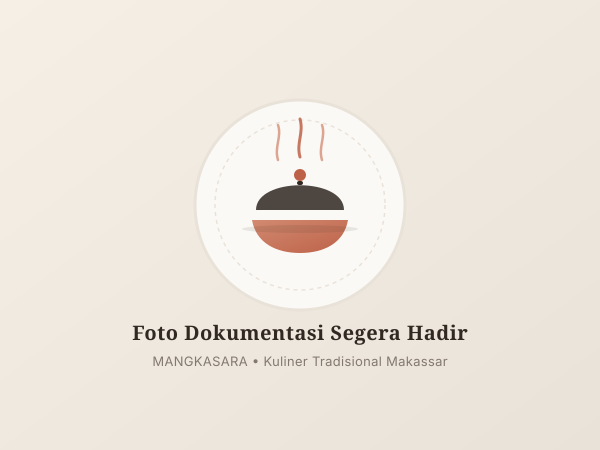

Nama Kuliner
Ringkasan deskripsi kuliner.
Karakteristik & Cita Rasa
Memuat karakteristik rasa...
Tentang Hidangan Ini
Memuat deskripsi kuliner...

Ringkasan deskripsi kuliner.
Memuat karakteristik rasa...
Memuat deskripsi kuliner...